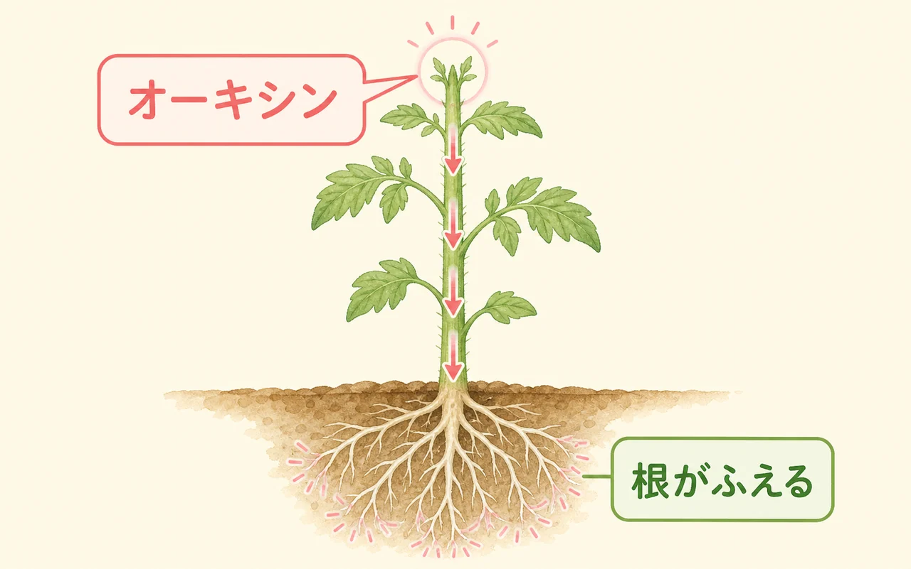
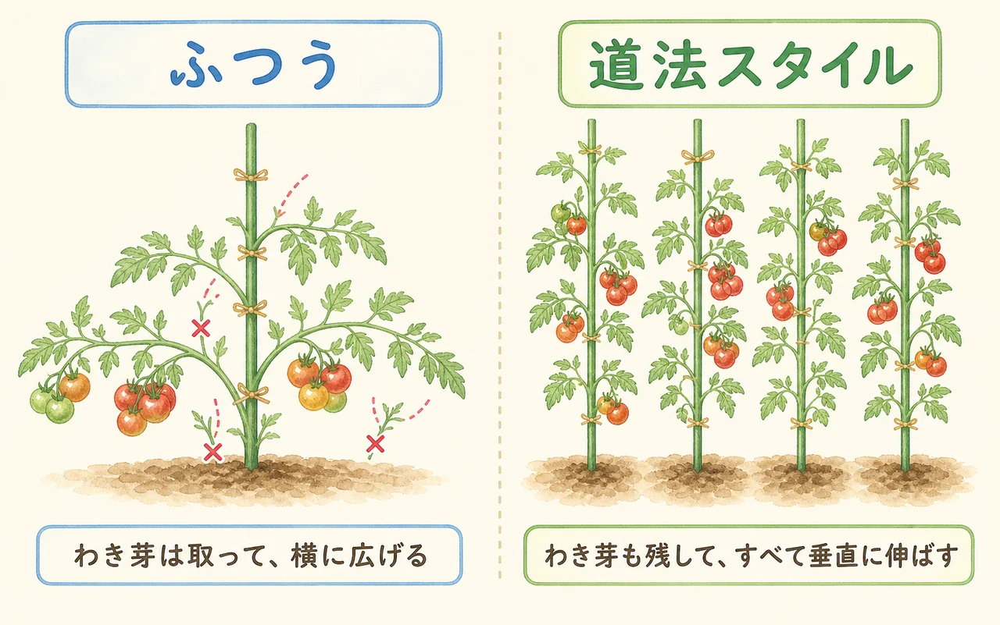
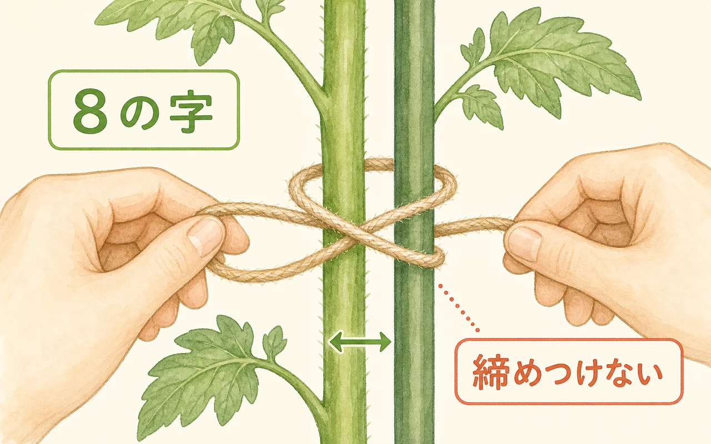
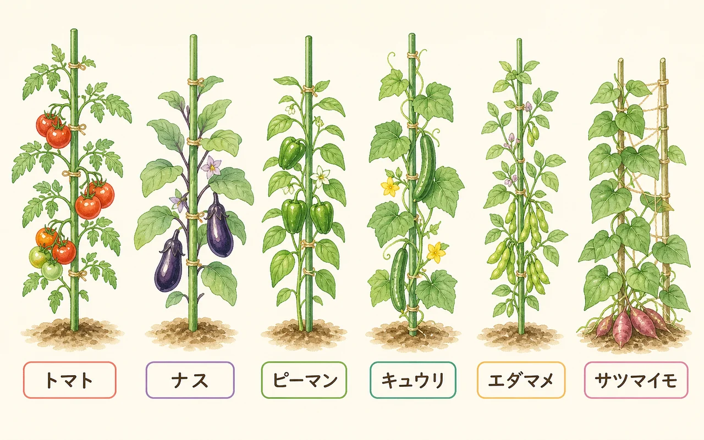

道法スタイルってなに？
道法スタイル（垂直仕立て栽培）は、果樹園芸の技術者で農学博士の道法正徳さんが体系化した栽培法です。やることはとてもシンプルで、野菜の枝や茎を、支柱にそって「垂直」に縛り上げるだけ。ふつうなら摘み取る脇芽（わきめ）も摘まずに残し、肥料や農薬もできるだけ使いません。
「それで本当に育つの？」と不思議に思うかもしれません。ポイントは、植物が自分の体の中でつくる「植物ホルモン」の力を引き出すこと。垂直に立てるという姿勢ひとつで、このホルモンの流れが整い、根がよく張り、丈夫に育つ——というのが道法スタイルの考え方です。

「たくさん肥料をあげて、脇芽はこまめに摘む」——わたしたちが習ってきた家庭菜園の常識と、ほぼ正反対なんだよね。だからこそ面白いの。まずはしくみから見てみよう。
なぜ「垂直」なの？ 植物ホルモンのしくみ
植物ホルモンは、植物が体の働きを調節するためにつくる、ごく微量の物質です。道法スタイルでは、枝を垂直に立てることで、おもに次の4つのホルモンがうまく働くと説明されます。

- オーキシン（発根・成長）：新芽の先でつくられ、茎を下って根へ運ばれます。枝が垂直だと重力にそって素直に下り、根の先まで届いて新しい根を次々につくります。枝が横や下を向くと流れがとどこおり、力が分散してしまいます。
- ジベレリン（茎を伸ばす）：肥料（とくに窒素）が多いと出すぎて、葉や茎ばかり茂る「つるボケ」の原因に。無肥料＋垂直で出すぎを抑え、実つきを良くします。
- サイトカイニン（細胞分裂・着花）：よく張った根でつくられ、花や実のもとを増やし、傷の回復を助けます。根が元気だとたくさん出ます。
- エチレン（締まり・防御）：茎が支柱にふれる刺激などで出て、細胞をきゅっと締め、病害虫に強い体をつくります。
まとめると、垂直に立てる→オーキシンが根に届く→根が張る→根がサイトカイニンを出す→花や実が充実、という良い循環。さらに無肥料でジベレリンの暴走を抑え、ふれる刺激でエチレンが体を丈夫にする——この合わせ技が道法スタイルの土台です。植物ホルモンそのものをもっと知りたい人は、植物ホルモンと剪定もどうぞ。
ふつうの栽培との違い
道法スタイルがユニークなのは、これまでの家庭菜園の「当たり前」を、いくつもひっくり返している点です。

- 枝・茎をすべて垂直に立てる
- 脇芽は摘まずに残す
- 肥料・農薬は基本なし
- 葉は減らさず、光合成の力を最大化
- 枝を横や斜めに広げて誘引
- 脇芽はこまめに摘む
- 肥料を定期的に追肥する
- 込みすぎた葉は整理する
脇芽を残すと葉の数が何倍にも増えるよね。葉は光合成をする「工場」だから、その分しっかりエネルギーを作れる、という考え方なんだ。摘みたくなる気持ちをぐっとこらえるのが、いちばんの難所かも。
基本のやり方
特別な道具はいりません。丈夫な支柱と麻ひもがあれば始められます。

- ① 丈夫な支柱を立てる：太め（直径16〜20mm）で長め（2m前後）の支柱を、ぐらつかないよう深く差し込みます。列植えなら合掌づくりなどで連結すると安心。
- ② 麻ひもで縛る：支柱と茎をまとめて、「8の字」になるようにやさしく縛ります。きつく締めず、茎が支柱にそって立つ程度に。ビニールひもより麻ひもがおすすめ。
- ③ 脇芽も立てる：出てきた脇芽は摘まず、伸びてきたら主枝にそわせて同じように垂直に縛ります。
- ④ 伸びたら継ぎ足す：枝が20cmほど伸びるたびに、上へ縛り足していきます。週に一度は、ひものゆるみや先端の垂れをチェック。
- ⑤ 水・肥料は控えめ：肥料は基本なし。水も、しおれかけるくらいまで控えると根がよく張ります（苗が小さいうちは様子を見て加減を）。
向く野菜・応用
道法スタイルは「どんな野菜でも垂直に立てる」のが基本姿勢です。とくに背が高くなる果菜類や、つるもの・葉ものと相性がよいとされます。

- 果菜類：トマト・ナス・ピーマン・キュウリなど。脇芽を立てる効果が出やすい代表格。
- 豆類：エダマメ・インゲンなど。枝を立ててコンパクトに。
- つるもの：ゴーヤ・カボチャなども、地を這わせず立てて仕立てます。
- 葉もの・根菜：ホウレンソウなどの葉を立たせる、サツマイモのつるを立てる、といった応用も紹介されています。
うれしい効果
うまくはまると、次のような効果が期待できるとされています。
- 収量が増える：脇芽の分だけ実がつき、葉が増えて光合成も活発に。
- 食味が上がる：実が締まり、甘み・うまみがのりやすい。
- 病害虫に強くなる：細胞が締まり、株の抵抗力が上がる。
- 収穫期間が長い：株が長く元気を保ち、シーズン後半まで穫れることも。
- 手間とコストが減る：脇芽摘み・追肥・農薬の作業を減らせる。
注意点・うまくいかないとき
いいことずくめに見えますが、「縛れば必ず増える魔法」ではありません。次の点に気をつけましょう。
- 肥えた土では失敗しやすい：すでに肥料分が多い畑だと、ジベレリンが出すぎて「つるボケ」になりがち。やせ気味の土・無肥料でこそ力を発揮する方法です。いきなり全部の畝で試さず、まずは一部で。
- 支柱の補強は念入りに：垂直に高く茂る分、風をまともに受けます。台風で倒れないよう、支柱は太く深く、連結や筋交いでしっかり固定を。
- こまめな誘引が必要：伸びるたびに縛り足す手間はかかります。放っておくと先端が垂れてホルモンの流れが乱れます。
- 環境次第で調整を：日当たり・風通しが悪いと、葉が多いぶん蒸れることも。その場合は下の古い葉だけ軽く整理します。
- 合う・合わないがある：土や気候、品種によって結果は変わります。一つの考え方として取り入れ、自分の畑で小さく試して確かめるのがおすすめです。
大事なのは「うちの畑ではどうかな？」と試してみること。プランター1鉢、畝のはしっこ1株からでも大丈夫。いつものやり方と並べて育てると、違いがよく見えて楽しいよ。
はじめての3ステップ
① 試す株を決める
まずはトマトやナスなど、背が高くなる果菜を1〜2株。やせ気味・無肥料の場所を選ぶと、効果が出やすくなります。
② 丈夫な支柱を立てて、垂直に縛る
太く長い支柱を深く差し込み、麻ひもで茎を8の字にやさしく固定。脇芽も摘まず、伸びたら同じように立てます。
③ 伸びたら縛り足し、いつもの株と見比べる
20cm伸びるごとに上へ継ぎ足し。となりに通常栽培の株を置いて、育ち方・実つき・味を比べると、自分の畑での向き不向きが見えてきます。
まとめ
道法スタイル・垂直仕立て栽培は、枝を垂直に立て、脇芽を残し、肥料を控えることで、植物が自分で出すホルモンの力（オーキシン・ジベレリン・サイトカイニン・エチレン）を引き出す栽培法です。うまくはまれば、無肥料・無農薬でも収量と食味が上がるとされます。
いっぽうで、肥えた土では失敗しやすく、支柱の補強や誘引の手間も必要です。「必ず成功する魔法」ではなく、一つの考え方として、自分の畑で小さく試して確かめるのが、いちばんの近道。育てている野菜の基本を知りたくなったら家庭菜園・人気の野菜10種へ、ホルモンのしくみをもっと知りたくなったら植物ホルモンと剪定へどうぞ。